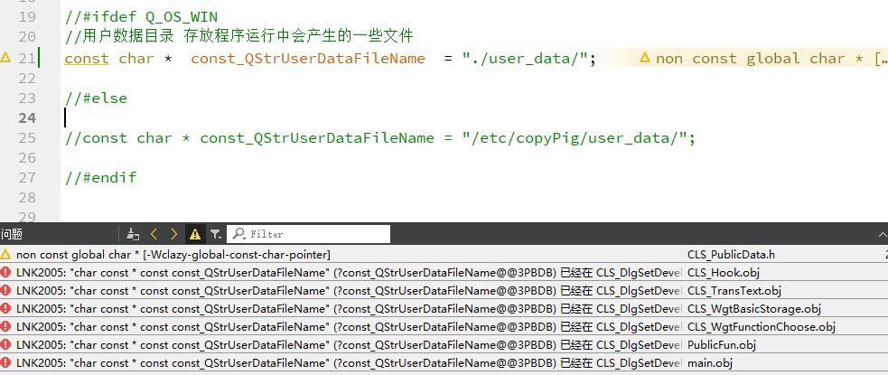

问题的引入
今天在自己编程的时候,遇到了一个问题,让我更加深入的了解了一些C++的语法,让我受益匪浅,这是今天遇到的问题

我在一个头文件中定义了一个全局变量的字符串指针变量,有多个头文件都会引用这个头文件,在编译的时候遇到了这个错误。从这一个问题上我又思考到了别的问题,在这里一并记录,以便后期理解。
在头文件中定义全局变量是对的吗？
既然思考,我便从头开始思考这个问题,为此我开始写demo做测试,在定义未经过修饰的全局时编译会报错。
虽然经常会写代码,但是很少使用全局变量,这次偶尔使用一下反而不适应了,按照正统的写法,变量的定义都是在.cpp中进行的,而如果多个头文件需要使用则需要在头文件中进行extern声明。如下,所以在头文件中定义全局变量是不太推荐的
//头文件
#include "public.h"
int public_data = 0;
//源文件
#ifndef PUBLIC_H
#define PUBLIC_H
extern int public_data;
#endif // PUBLIC_H
难道不能在头文件中定义了全局变量了吗？
C++的魅力就是在于没有什么事是不能做的,所以头文件中当然也可以定义全局变量,但是单纯的一个变量肯定是不行的,这里需要关键字修饰。
但是使用什么关键字修饰呢？在这里我使用了static和const进行了修饰,在编译时都没有报错,但是要注意没有报错不等于得到了我们想要的结果。static修饰了全局变量,其实每个头文件引用的便不是原本的变量了,我做了测试在public.h头文件中定义全局静态变量,然后在不同的源文件中使用它(赋值并输出信息)
//这是在public.h头文件中定义的全局静态变量(姑且这么说吧)
#ifndef PUBLIC_H
#define PUBLIC_H
static int public_data = 100; //static 修饰
#endif // PUBLIC_H
//此变量在A类中引用
A::A()
{
public_data = 10;
qDebug() << "public_data = " << public_data << " addr = " << &public_data;
}
//此变量在B类中引用
B::B()
{
public_data = 19;
qDebug() << "public_data = " << public_data << " addr = " << &public_data;
}
//此变量在主函数中引用
int main(int argc, char *argv[])
{
QCoreApplication a(argc, argv);
myfun(); //这个是public.cpp文件中的函数也是输出public_data的值和变量的地址的,在这里调用一下
A aa;
B b;
public_data = 50;
qDebug() << "public_data = " << public_data << " addr = " << &public_data;
return a.exec();
}
//运行结果
public.cpp public_data = 100 addr = 0xfa900c
a.cpp public_data = 10 addr = 0xfa9000
b.cpp public_data = 19 addr = 0xfa9004
main.cpp public_data = 50 addr = 0xfa9008
很明显从输出的结果中看,每个源文件中的public_data地址都不一样,说明它们已经不是一个变量了而是四个变量。很明显每个模块(x.h x.cpp 两个文件的组合可以称作模块)在引用public.h时都会新定义一个public_data变量,这是为什么地址不同的原因。另外由于每个变量都被static修饰导致了变量对其他模块是不可见的,所以这样并不会报重定义的错误。所以这种定义方式的全局变量并不是我们想要的,这只是每个模块内部的全局变量。
接着我又使用正统的做法进行了测试,为的是与上面的结果做个对比。
//这里仅仅是public.cpp 和 public.h文件做了修改,其他文件没有修改
#ifndef PUBLIC_H
#define PUBLIC_H
#include <QDebug>
extern int public_data; //h修改
//static int public_data = 100;
void myfun();
#endif // PUBLIC_H
#include "public.h"
int public_data = 100; //cpp增加
void myfun()
{
qDebug() << __FILE__ << " public_data = " << public_data << " addr = " << &public_data;
}
//运行结果
public.cpp public_data = 100 addr = 0x519000
a.cpp public_data = 10 addr = 0x519000
b.cpp public_data = 19 addr = 0x519000
main.cpp public_data = 50 addr = 0x519000
这个结果才是我想要的,地址都是一样的,说明是同一个变量。
除了static外,还有一个const,测试一下它是不是可以达到我们的预期。 我们在上面例子的基础上稍作修改,在public.h文件中定义const全局变量,在其他的文件中删除赋值的操作,如下
//public.h
#ifndef PUBLIC_H
#define PUBLIC_H
#include <QDebug>
const int public_data = 100; //只有这一处定义,区域文件只是打印变量值和地址
void myfun();
#endif // PUBLIC_H
//运行结果
public.cpp public_data = 100 addr = 0x547ac4
a.cpp public_data = 100 addr = 0x546e54
b.cpp public_data = 100 addr = 0x547274
main.cpp public_data = 100 addr = 0x547694
很明显,这似乎也是四个变量,在 C++ 看来,全局const定义就像使用了static说明符一样。虽然也是又多个备份,但是我们在使用const常量时一般都是读取操作,不会修改,这样用似乎也可以接受。
世界线收束,回归问题
现在回到我的问题上来,我在头文件中定义如下的const变量为什么会报错
const char * const_QStrUserDataFileName;// = "./user_data/"; //在头文件中定义报错
说一下自己的理解,首先这样做按照自己的想法是没错的,我使用const修饰了一个全局变量,它的效果和static修饰的效果差不多。但是这是我自己想的,实际上我修饰的是一个指针变量,什么东西沾上指针可就复杂了(珍爱生命,远离指针)。
在这里想搞清楚还需要理解指向常量的指针int const * p和常量指针int * const p的含义。
【网络链接】C++ const关键字
【本地链接】【C++】const特性总结
很明显,我声明的是一个指向常量的指针,const修饰的是 *const_QStrUserDataFileName(修饰的是指向的内容),而不是const_QStrUserDataFileName指针变量本身。这就有意思了,我本想定义一个常量指针,结果不注意定义了一个指向常量的指针,指向常量的指针其实和未经修饰的全局变量一样了,所以会报重复定义的错误
解决方案
既然问题已经知道产生的原因,那么也要提供一些解决方案。这里提供的解决方案仅仅修改后是不会报错,至于合不合适还是需要具体问题具体分析。
1. 既然我需要的是常量指针,那么我就修改一下定义方式好了
char * const const_QStrUserDataFileName = "./user_data/";
const char * const const_QStrUserDataFileName = "./user_data/";
const char const_QStrUserDataFileName[] = "./user_data/";
2. 使用static修饰
static const char * const_QStrUserDataFileName = "./user_data/";
3. 在cpp文件中定义,在h文件中extern声明